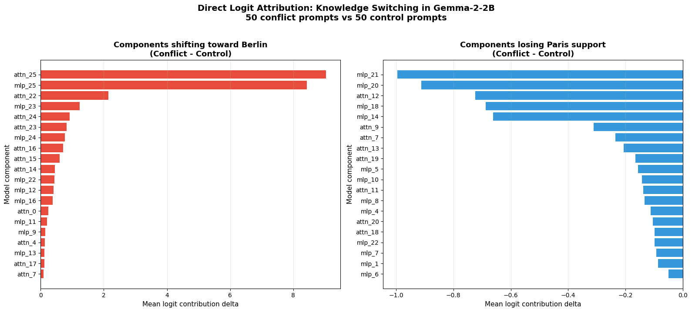
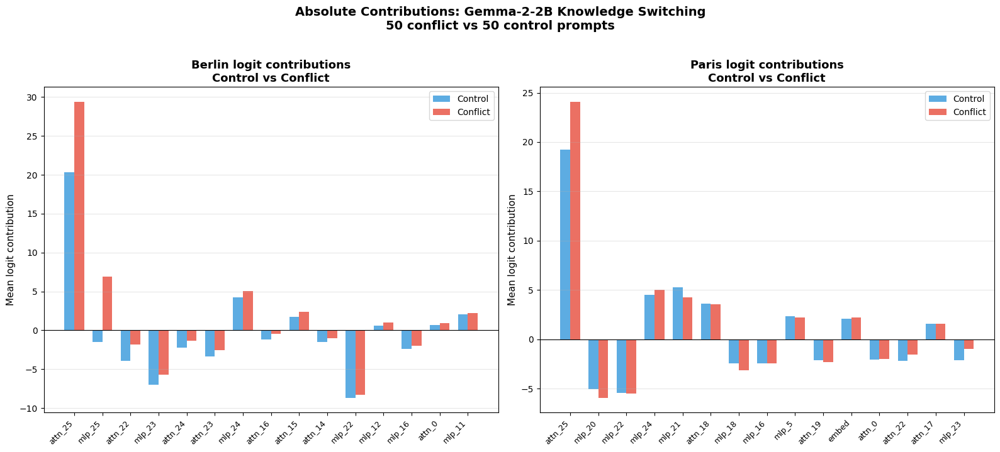

Every language model carries two kinds of knowledge at once. There is what it learned during training ("the capital of France is Paris"), and whatever you tell it in the prompt right now ("actually, for this exercise, the capital of France is Berlin"). Ask it a question after that, and it usually goes with the prompt. That is the behavior we all rely on when we give a model new context.
But how does that override actually happen inside the network? Is it one component making the call, or a diffuse vote across the whole model? And if it is a specific mechanism, can we find it, name it, and watch it work?
I spent a few weeks trying to answer that for Gemma-2-2B, using mechanistic interpretability tools (TransformerLens and Gemma Scope SAEs) to trace a factual override from the residual stream down to individual attention heads and sparse features. Here is what I found.
The setup
Hypothesis: under a deliberate factual conflict ("the capital has been reassigned to Berlin"), late attention heads shift their vote away from the trained answer and toward the contextual one. And this shift is consistent across many unrelated facts, not just the Paris/Berlin example.
Method: direct logit attribution (DLA). This decomposes the model's final output logit into the individual contribution of every attention layer and MLP layer in the residual stream. So you can ask "how much did layer 14's attention output push toward Berlin versus Paris, at this specific position?" instead of only seeing the final aggregate answer.
Dataset: 50 conflict prompts spanning geography, science, history, literature, astronomy, and the natural world. Each one paired with a matched control prompt with identical structure but no override instruction.
The core attribution function is simple. Cache every attention and MLP output, project each one onto the unembedding direction for the target token, and read off the dot product:
def direct_logit_attribution(prompt, model, target_tokens=[" Paris", " Berlin"]):
tokens = model.to_tokens(prompt)
with torch.no_grad():
_, cache = model.run_with_cache(
tokens,
names_filter=lambda name: (
name.endswith("attn_out") or
name.endswith("mlp_out") or
name == "hook_embed"
)
)
W_U = model.W_U.float()
results = {}
for tok in target_tokens:
idx = model.to_single_token(tok)
direction = W_U[:, idx]
contributions = {"embed": (cache["hook_embed"][0, -1, :].float() @ direction).item()}
for layer in range(model.cfg.n_layers):
attn_out = cache[f"blocks.{layer}.hook_attn_out"][0, -1, :].float()
mlp_out = cache[f"blocks.{layer}.hook_mlp_out"][0, -1, :].float()
contributions[f"attn_{layer}"] = (attn_out @ direction).item()
contributions[f"mlp_{layer}"] = (mlp_out @ direction).item()
results[tok] = contributions
return resultsFinding 1: one attention layer does most of the work
Running this across all 50 conflict/control pairs and ranking which component's contribution shifts most between the two conditions gives a clean answer:
| Component | Control | Conflict | Delta |
|---|---|---|---|
| attn_25 | 20.36 | 29.41 | +9.04 |
| mlp_25 | -1.49 | 6.94 | +8.43 |
| attn_22 | -3.93 | -1.79 | +2.14 |
| mlp_23 | -6.98 | -5.74 | +1.24 |
| attn_24 | -2.22 | -1.31 | +0.91 |
attn_25, the second-to-last attention layer in this 26-layer model, dominates the shift. mlp_25 is right behind it. Going in, I had guessed both attn_22 and attn_25 as candidates based on the usual "late layers decide" intuition. The data narrowed it to attn_25 and mlp_25, with attn_22 an order of magnitude smaller.


Finding 2: rival features inside the same layer
Knowing which layer flips is not the same as knowing what concept it is representing. So I loaded Google DeepMind's Gemma Scope sparse autoencoder for layer 25 (16,384 features decomposed from the 2,304-dim residual stream) and compared which features were active under conflict versus control.
Two features stood out immediately:
- Feature 14325. Mean activation jumps from 38.6 (control) to 63.0 (conflict). The single largest gain of any feature.
- Feature 13749. Mean activation drops from 66.0 (control) to 32.5 (conflict). The single largest loss.
The interesting part is what happens when you compare their decoder directions directly. The cosine similarity between feature 14325 and feature 13749 is -0.9966, almost perfectly anti-correlated. These are not two unrelated features that happen to move in opposite directions on this one prompt type. Geometrically, they point in nearly opposite directions in the residual stream. It looks like a genuine rival pair: one feature encodes "go with the contextual answer," the other encodes "go with the trained answer," and the conflict prompt tips the balance from one to the other.
Finding 3: the head barely looks at the new fact, but still uses it
This is the part that complicated the story in a useful way. If a head at layer 25 is going to vote for "Berlin," a natural guess is that it directly attends to the token "Berlin" in the prompt. I checked this across all 50 pairs.
It mostly does not. Mean attention to the actual counterfactual token from the final position was only 0.05. Attention is overwhelmingly captured by the <bos> token (an attention sink, roughly 0.42 on average) and by nearby structural tokens like "to." Yet despite barely looking at "Berlin" directly, the head still reliably pushes the output toward it. All 50 out of 50 times.
Source-token DLA resolved this. Instead of asking only which layer votes for the answer, you decompose which token position the value it uses came from:
def source_token_dla(prompt, model, layer=25,
parametric_token=" Paris",
counterfactual_token=" Berlin"):
tokens = model.to_tokens(prompt)
... # cache attention pattern + value vectors at `layer`
for s, tok in enumerate(token_strs):
for h in range(n_heads):
attn_w = pattern[h, -1, s].item()
contribution = attn_w * (v[s, kv_h, :] @ W_O[h])
paris_total += (contribution @ paris_dir).item()
berlin_total += (contribution @ berlin_dir).item()
source_contributions[tok] = {"net_berlin": berlin_total - paris_total, ...}Even a small amount of attention weight on the counterfactual token carries a disproportionately large logit contribution once you factor in its value vector. Averaged across 20 validated conflict/control pairs (each checked to confirm the model actually outputs the counterfactual answer under conflict and the parametric answer under control, 20/20 passed):
| Token group | Control | Conflict | Delta |
|---|---|---|---|
| Counterfactual token (e.g. "Berlin") | 0.000 | +0.080 | +0.080 |
| Subject token (e.g. "Paris") | -0.028 | -0.006 | +0.023 |
| All other tokens | -0.617 | +0.045 | +0.662 |
So the mechanism is not "attend more to the new fact." It is closer to this: a small, consistent read from the counterfactual token's value vector is enough to flip the vote, while the subject token's own contribution, which was actively working against the override in the control condition, gets suppressed almost to zero.
What this adds up to
Under factual conflict, attn_25 (backed by mlp_25) is the layer where the override actually happens. A specific, sharply anti-correlated pair of SAE features (14325 vs 13749) represents the two competing answers at that layer. And mechanistically, the flip is driven less by attending harder to the new fact and more by a small but reliable read of it combined with suppression of the old subject's influence.
None of this was obvious going in. The original hypothesis guessed at two candidate layers based on general intuition about late layers doing final decision-making. The data picked out one specific layer and its paired MLP, then handed me a much stranger and more specific story about how that layer does its job than I expected.